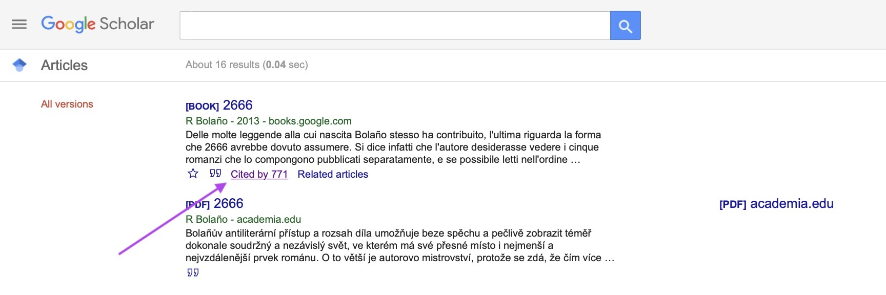

Compiling a High Quality Bibliography
An advisee was recently dealing with one of the many scholarly inconveniences of the coronavirus pandemic. After having to cancel a research trip to Mexico, she needed access to a less-studied text that is only available in select Mexican bookstores (and nearly impossible to obtain in Canada). She had done good legwork and exhausted many avenues in her attempts to locate the text: She’d googled like mad, sought the text via interlibrary loan, requested that our UBC librarian purchase the book, asked the Mexican bookstore if it would ship her the book, etc. Her efforts, unfortunately, were unsuccessful. So in a biweekly meeting, she asked if I had any additional ideas. I gave her some suggestions (write the author, write the publisher, ask on social media), but after the meeting, I started looking myself. Within an hour, I’d found the text online.
It’s difficult to describe what a fruitful search for resources looks like, because it’s often akin to a Wikipedia linkfest that takes a researcher down myriad rabbitholes–most of them futile, a select few diamond mines. Here, I’ll describe some of my tried and true strategies, and I’ll explain how I found that elusive text that my student had been hunting down for weeks.
A High-Quality Bibliography
Relevance
Students often ask me how to compile a quality bibliography. First, what is a “quality bibliography”? Let’s say you’re writing an article on the novela negra of the past decade. You will want to cite: * foundational texts (relevant work on detective fiction in general, definitions of the novela negra mode) * pertinent literary criticism about the particular novela(s) negra(s) you are analyzing * theory and criticism related to your broader analytical framework * literature review: you may also need to cite/document other literary texts in the novela negra tradition that establish a genealogy of sorts * historical or sociological works to situate your analysis in a particular context
Optimizing Your Search Terms on Google Scholar
Notice that a recurring theme in those five bullet points is “relevance.” Unless you are analyzing a less-studied work, you won’t cite every single scholar that has written on the text. Instead, you’ll cite criticism that considers the work from a relevant angle. For instance, a Google Scholar search of Roberto Bolaño returns 15,100 results. However, if I search for Roberto Bolaño and “novela negra” (in quotation marks!), I have a more manageable 576 results. If I am particularly interested in treatments of his posthumous novel, and I add 2666 to the search query, I get 229 results. This is a much more useful number to search through.
Searching Within Results
However, there is an even better strategy in my estimation, which is beginning from the literary work at hand and working backward. One of my favorite techniques is to find a text (let’s stick with Bolaño’s 2666), and to “search within citing articles.” This means that, rather than just mentioning 2666 (for instance, in a literature review), the article/book at hand actually cites Bolaño’s novel. So, the first step is to search for Bolaño’s 2666 on Google Scholar and to click on “Cited by” under the Google entry: 
The second step is to check the box for “search within citing articles” and then to enter the relevant term (“novela negra” in our case) in the search box:
When I do this search, I get only 70 results that include the term “novela negra” and cite 2666. Bingo!:
From there, I can select relevant articles to skim or read based on description (is it truly relevant?), quality of venue (is it peer reviewed?), numbers of citations (how important has the work been in subsequent scholarship?), etc. This is a first step toward compiling a comprehensive, high quality bibliography.
Mining Other Scholars’ Works Cited
A second useful trick for finding good sources is to look at the bibliography of scholars that are working on topics similar to yours. If you are searching for theory and criticism related to detecive fiction, identify a respected scholar that has done the work before you. For instance, Glen S. Close and Persephone Braham have written excellent monographs on the topic, so the works cited sections of their books and articles will cite much of the important cultural and theoretical work on the detective genre. Even if you are working on, say, the Central American novela negra, their works cited will point you toward texts that may be useful for your project.
Locating Difficult-to-Find Texts
Getting Creative
Now, to the cliffhanger. How did I locate the difficult-to-find text that my advisee was looking for? My student had already done good work in searching by title, author’s name, and book jacket description, so I knew I would have to dig deeper. I ended up searching for events where the author had given a book reading, and one of the events had an image of the book laying open on a table. I chose a sentence from the page and searched for it on Google with quotation marks. Basically, I did a reverse search for the book by citing something that I knew appeared in the text. That returned a side-by-side translation of the text from Spanish to English, which provided the entirety of the book’s content. The website where I found the novel was not turning up in the results for my student, because it was (perhaps unethically) listed as the work of the translator, not the original author. This type of let’s see what sticks search is something that is hard to explain, but will develop for you over time.
Other strategies for locating a tough-to-find text
- Search for the book on Amazon and, if a preview is available (“Look Inside”), you can search for terms and see a snippet of the text.
- Similarly, Google Books will often allow limited page views or snippet view of texts. I use this when I am revising quotations for books that I no longer possess (say I returned it to the library but am doing an R&R).
- Related to Google Books, I find that different countries have different agreements with Google in terms of if there is a preview of the text (snippet or full page) and how many pages one can view. In my experience, US Google books (https://books.google.com) has more texts available for preview than Canada (https://books.google.ca), so I search in both of them.
- Many publishers post the full text of introductions to monographs on their websites. Introductions allow you to determine if a work is worth tracking down (ILL, purchasing, etc.)
- Even if a work is not open access, the bibliography/works cited is often viewable. This can provide inspiration for potentially relevant works to review.
- Once you’ve exhausted all avenues, you can crowdsource your search in relevant social media groups. Different university libraries have access to different digital texts, and your fellow scholars may be willing to download and send you a text when you’re in a bind.
- And don’t forget the obvious: search the local public library, your university’s library catalog, and public repositories like academia.edu, Internet Archive, and Project Gutenberg